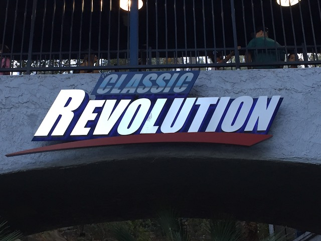
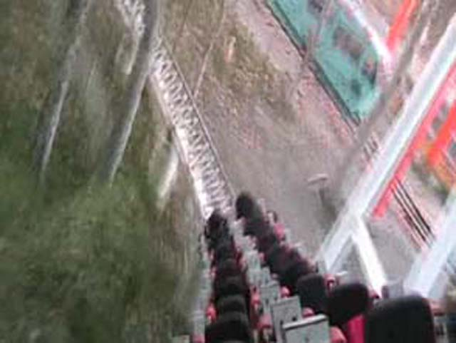

| |
New Revolution Review

We're here at Six Flags Magic Mountain. Today's ride we'll be reviewing for you is New Revolution. Now this ride certainly has a long and interesting history. When it opened in 1976, it ran with lap bars and was completely trimless! But then in the early 1990s, Revolution changed and it ran with bulky OTSRs that should've never been there and added a sh*tload of trim brakes. Now Revolution ran like this for many decades, and for years, this was the only Revolution that I knew. EVERYONE complained about how the ride got neutered and was just a shadow of its former self, myself included. Well eventually, Six Flags got the hint, and removed the OTSRs, many of the trims, and called it a brand spanking new ride. And HOLY CRAP!!! They made it a million times better. This ride went from a 5/10 to a 7/10. Because come on. A slow clunky painful ride or a fast forceful fun ride? You don't need a brain to figure this one out! Oh, and during this makeover, they also made it a Virtual Reality coaster. I may have been skeptical of the VR technology, but I was very impressed with how it ran. The VR is themed to being in this war zone, fighting in a fighter jet against these killer robots, and you're shooting at them. The graphics aren't that great, being of video game quality, but just having it all surround you. Think Halo. But for the sake of keeping the review simple, we're going to review New Revolution as itself, without the VR technology. So no headsets for us today. So we'll climb in the seats, buckle the seatbelts, and pull down the lap bars (And thankfully nothing else) and the lapbar. Once that's all settled, you climb up the lifthill. As you climb up into the trees, you look around, and though the view isn't that good, you can see a little bit of Viper and X2 to your left. And once you get to the top, you drop. And it's not a bad first drop. You plummet down through the trees and up the second hill. Hey, we're not crawling at the top!! Oh yeah. They removed some of the trim brakes. And then you drop back down. From here, you fly by the station. You wave hello (unless you're sucked into the world of video game war zone). New Revolution then carries you up the third hill before you coast over the top (Again, NO TRIM BRAKES!!! YAY!!!), but then you spiral down to the ground and spiral back up where we meet some trims. Yeah, these brakes stayed, which act much more like a midcourse brake run. Bummer, but I'm just happy at how much better this ride is. Then you see the element that made Revolution famous. The loop. We start to accelerate. We gradually to make our way down the straight track. This is JUST LIKE Jaguars drop off the second lift hill. Eventually, we have fully accelerated and are ready for the loop. The loop is a lot of fun. But while this is certainly a historic loop as the first modern vertical loop on any roller coaster, amongst all the Schwarzkophs, it's one of the weaker ones. But hey, just a minor nitpick. Then you twist up past a waterfall. And after that you spiral down into the terrain. I remember back when I was 10, that area was just a field waiting to be used I thought. And sure enough, 4 years later, Tatsu was born there. And that just leads you into a tunnel. This part of the ride is fun because people purposely scream just to hear it echo (though it does sort of sour the mood if you're riding with the VR goggles). However after that tunnel, you hit another set of brakes. A bummer, but not a big deal. After that, you go through the loop. Which is cool to look at. Then you dip a little, which leads into the helix finale over the water which heads straight into the brake run. What was once a terrible ride is now a really cool and fun roller coaster. Not the best, but just a very fun and enjoyable ride. And with the VR Goggles, it certainly creates an intersting experience that is certainly a lot of fun. I'd definetly recommend giving it a ride when you're visiting Six Flags Magic Mountain.
7/10
Location: Six Flags Magic Mountain
Revolution opened in 1976
Revolution was neutered in 1992
New Revolution got its makeover and was restored to its former glory in 2016
Built by: Schwarzkopf
Last Ridden: October 6, 2019
New Revolution Photos






Home
|